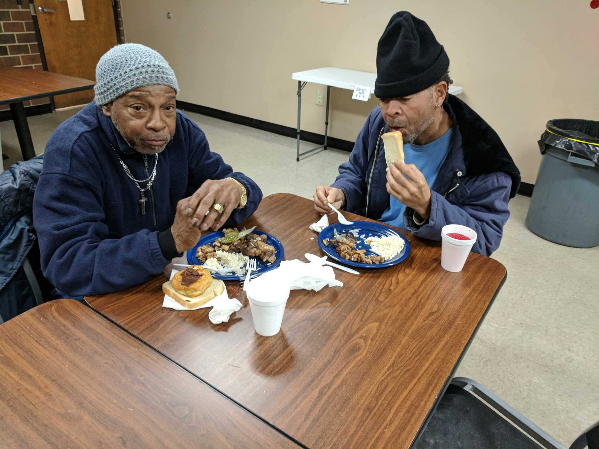

{kind=link}
The kitchen at Allied Churches.
The community
Volunteers and nonprofit organizations work to fight homelessness
By Calleigh West
Lauren Kukosky
Sean Jones
Thomas Hale &
Allie Dietz
Jan. 1, 2018
People gather outside the rectangular, brick cafeteria building, waiting for it to open. They sit on the picnic benches outside in their warmest clothes; puffy jackets, wool hats, and long pants. Winter hasn’t officially arrived, but the first snow of the year is only a few days away.
Inside, they stand in line for a dinner service offered by Allied Churches of Alamance County. The serving trays are filled with mushrooms, salad, and beef tips mixed with chopped peppers.
Most of the guests are homeless, or food insecure. It could be the only meal some of them eat today.
“We serve food for everyone who needs it,” said Harvey Knowles, a Shelter Advocate at ACAC. “We bring people together. Anybody and everybody can come.”
Knowles is overseeing a weekday meal program that expects to feed between 60 and 120 people at lunch and dinner, depending on the weather.
“When it rains you get a lot less people coming,” he said. “Some people have to walk five miles to get here. I don’t know what they do when they don’t come, but I hope they have something figured out.”
This is one of several services offered by Allied Churches. It also runs a 24-7 emergency shelter for men, women and families, employment training, and a food pantry, that provides 50 pounds of groceries to around 2,000 people in the community every month.
ACAC was founded in 1982 when 10 churches in the area saw a need to help the hungry, homeless, and hopeless in Alamance County. They now operate the largest shelter, food pantry and meal programs in the county.
Nearly all of the food and resources they offer are contributed by local people, organizations and churches.
Volunteer work is a crucial part of the services they offer, with almost 900 people volunteering in 2016.
Most of the volunteer-base comes from churches in the area. Unpaid help runs Allied Churches’ entire meal program, from cooking to serving.
Local churches also help out with monetary donations.
“The Catholic Church is very involved in social justice issues,” said Rev. Paul Lininger, pastor at The Blessed Sacrament, one of the churches that established Allied Churches. “We contribute to them and serve as a conduit to get other groups connected to them.”
Allied Churches’ total revenue was approximately $1,616,000 in 2016. About $1,266,000 of that came in the form of contributions and gifts.
Most of these donations come from churches like The Blessed Sacrament.
“People feel called to help, and we want people to help,” said Caitlin Vatikiotis-Bateson, Community Relations Director for Allied Churches. “But sometimes we want to point people in a different direction.”
Among the revenue from contributions and gifts, are grants funded by private organizations.
“When we get a grant for $198,000 that doesn’t always mean we get a check for $198,000,” Vatikiotis-Bateson said. “It means we have to spend that amount before we can be paid back.
Other grants come with spending restrictions. A $20,000 housing grant might not allow ACAC to use any of that funding for medical supplies or employee wages.
A couple of men eat dinner at Allied Churches.“That’s where we need community support from our neighbors,” Vatikiotis-Bateson said.
Cash can sometimes be the best contribution, because it allows for unrestricted funding that ACAC can use for any of the 27 services it provides.
“We want to get the most value out of your dollar,” she said.
Though funding from community partners keeps its doors open, ACAC receives relatively little funding from the government, totaling $54,000 a year in federal grants.
To put that in perspective, employee salaries totaled nearly $650,000 in 2016.
Executive Director Richard Gary, took over in March following the termination of his predecessor in August, 2016. ACAC has faced monetary problems after losing a grant in the summer of 2016, and has been forced to downsize three staff positions.
Gary has continued working to help the community, despite those challenges early in his tenure.
“I’ve been in it since the beginning,” Gary said. “I actually was a homeless youth. Growing up I went to Goodwill to shop for clothes.”
He remembers being hungry all the time as a kid and having his heat cut off for two years.
Gary clarifies that homelessness isn’t always about drug or alcohol issues. It could be a truck driver or a pharmacist who lost their job.
He says homelessness is a traumatic experience, which is why counseling is a key component at Allied Churches.
Jai Baker, housing director, said it all starts with one question.
“How can we help you?”
The housing team provides the homeless with a chance for a successful future. Baker recalls a time where they housed a family of five, saving them from a drug problem.
Rion Thompson, street outreach coordinator, said he started working at Allied Churches because he loved the energy and their mission.
Since becoming the outreach coordinator, he realized that just food, water and a conversation could change their whole world.
“It’s about convincing people that this is not their end,” Thompson said.
{kind=link}
{kind=link}
{kind=link}